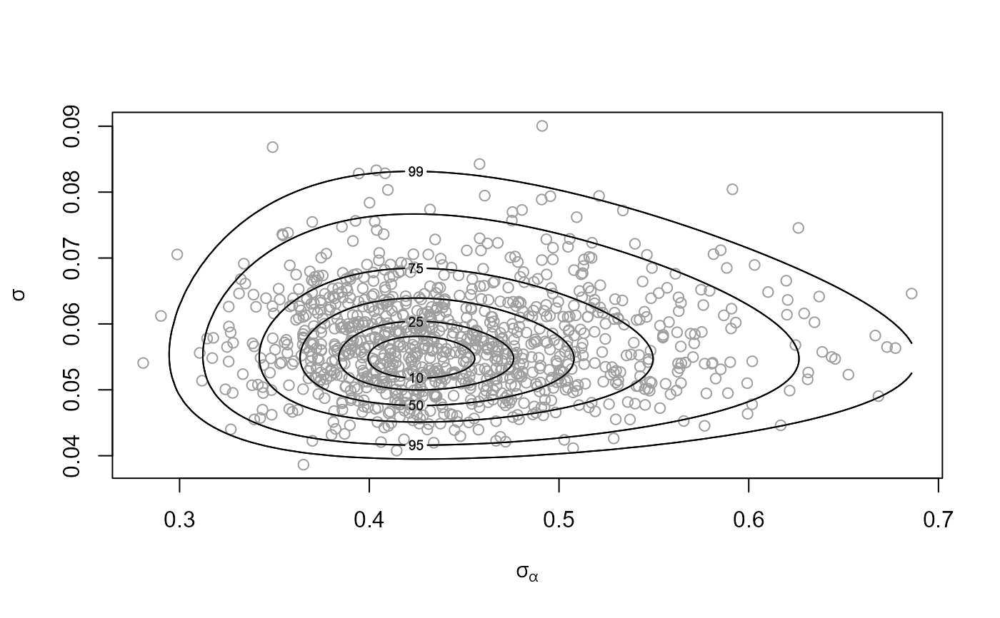
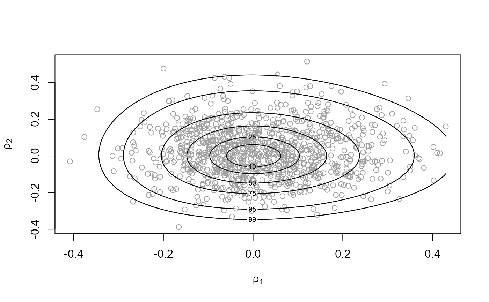
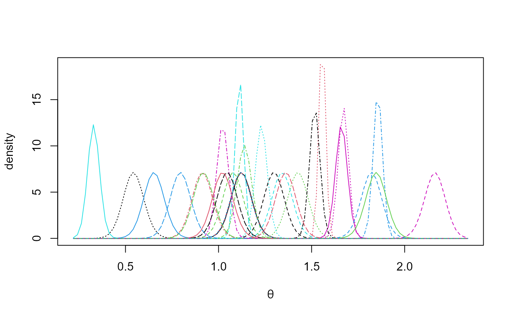

Produces random samples from the posterior distribution of the parameters of a 1-way hierarchical ANOVA model.
Usage
hanova1(
n = 1000,
resp,
fac,
...,
prior = "default",
hpars = NULL,
param = c("trans", "original"),
init = NULL,
mu0 = 0,
sigma0 = Inf,
nrep = NULL
)Arguments
- n
A numeric scalar. The size of posterior sample required.
- resp
A numeric vector. Response values.
- fac
A vector of class
factorindicating the group from which the corresponding element ofresporiginates. Must have the same length asresp.- ...
Optional further arguments to be passed to
ru.- prior
The log-prior for the parameters of the hyperprior distribution. If the user wishes to specify their own prior then
priormust be an object returned from a call toset_user_prior. Otherwise,prioris a character scalar giving the name of the required in-built prior. Ifprioris not supplied then a default prior is used. See Details.- hpars
A numeric vector. Used to set parameters (if any) in an in-built prior. If
prior = cauchythenhparsis a numeric vector of length 2 giving the respective scale parameters of the half-Cauchy priors for \(\sigma_\alpha\) and \(\sigma\).- param
A character scalar. If
param = "trans"(the default) then the marginal posterior of hyperparameter vector \(\phi\) is reparameterized in terms of \(log \sigma_\alpha, log \sigma\). Ifparam = "original"the original parameterization, i.e. \(\sigma_\alpha, \sigma\) is used. The former tends to make the optimizations involved in the ratio-of-uniforms algorithm more stable and to increase the probability of acceptance, but at the expense of slower function evaluations.- init
A numeric vector. Optional initial estimates sent to
ruin the search for the mode of the posterior density of (perhaps a subset of) the hyperparameter vector \(\phi\). If an in-built prior is used thenruis used to sample from the marginal posterior density of \((\sigma_\alpha, \sigma)\), soinitmust have length 2. Otherwise,inithas length equal to the argumentanova_dsupplied toset_user_prior.- mu0, sigma0
A numeric scalar. Mean and standard deviation of a normal prior for \(\mu\). Only used if an in-built prior is used or if
anova_d = 2is supplied in a call toset_user_priorto set a user-defined prior. The default,sigma0 = Inf, sets an improper uniform prior for \(\mu\).- nrep
A numeric scalar. If
nrepis notNULLthennrepgives the number of replications of the original dataset simulated from the posterior predictive distribution. Each replication is based on one of the samples from the posterior distribution. Therefore,nrepmust not be greater thann. In that eventnrepis set equal ton.
Value
An object (list) of class "hef", which has the same
structure as an object of class "ru" returned from ru.
In particular, the columns of the n-row matrix sim_vals
contain the simulated values of \(\phi\).
In addition this list contains the arguments model, resp,
fac and prior detailed above and an n by \(I\)
matrix theta_sim_vals: column \(i\) contains the simulated
values of \(\theta\)\(i\). Also included are
data = cbind(resp, fac) and summary_stats a list
containing: the number of groups I; the numbers of responses
each group ni; the total number of observations; the sample mean
response in each group; the sum of squared deviations from the
group means s; the arguments to hanova1 mu0 and
sigma0; call: the matched call to hanova1.
Details
Consider \(I\) independent experiments in which the \(ni\) responses
\(y\)\(i\) from experiment/group \(i\) are normally
distributed with mean \(\theta i\) and standard deviation \(\sigma\).
The population parameters \(\theta\)1, ...,
\(\theta\)\(I\) are modelled as random samples from a normal
distribution with mean \(\mu\) and standard deviation
\(\sigma_\alpha\). Let \(\phi = (\mu, \sigma_\alpha, \sigma)\).
Conditionally on \(\theta\)1, ..., \(\theta\)\(I\),
\(y\)1, ..., \(y\)\(I\)
are independent of each other and are independent of \(\phi\).
A hyperprior is placed on \(\phi\).
The user can either choose parameter values of a default hyperprior or
specify their own hyperprior using set_user_prior.
The ru function in the rust
package is used to draw a random sample from the marginal posterior
of the hyperparameter vector \(\phi\).
Then, conditional on these values, population parameters are sampled
directly from the conditional posterior density of
\(\theta\)1, ..., \(\theta\)\(I\) given \(\phi\) and the data.
See the vignette("bang-c-anova-vignette", package = "bang")
for details.
The following priors are specified up to proportionality.
Priors:
prior = "bda" (the default):
\(\pi(\mu, \sigma_\alpha, \sigma) = 1/\sigma,\)
that is, a uniform prior for \((\mu, \sigma_\alpha, log \sigma)\),
for \(\sigma_\alpha > 0\) and \(\sigma > 0\).
The data must contain at least 3 groups, that is, fac must have
at least 3 levels, for a proper posterior density to be obtained.
[See Sections 5.7 and 11.6 of Gelman et al. (2014).]
prior = "unif":
\(\pi(\mu, \sigma_\alpha, \sigma) = 1,\)
that is, a uniform prior for \((\mu, \sigma_\alpha, \sigma)\),
for \(\sigma_\alpha > 0\) and \(\sigma > 0\).
[See Section 11.6 of Gelman et al. (2014).]
prior = "cauchy": independent half-Cauchy priors for
\(\sigma_\alpha\) and \(\sigma\) with respective scale parameters
\(A_\alpha\) and \(A\), that is,
\(\pi(\sigma_\alpha, \sigma) =
1 / [(1 + \sigma_\alpha^2 / A_\alpha^2) (1 + \sigma^2 / A^2)].\)
[See Gelman (2006).] The scale parameters (\(A_\alpha\), \(A\))
are specified using hpars = (\(A_\alpha\), \(A\)).
The default setting is hpars = c(10, 10).
Parameterizations for sampling:
param = "original" is (\(\mu, \sigma_\alpha, \sigma\)),
param = "trans" (the default) is
\(\phi1 = \mu, \phi2 = log \sigma_\alpha, \phi3 = log \sigma\).
References
Gelman, A., Carlin, J. B., Stern, H. S. Dunson, D. B., Vehtari, A. and Rubin, D. B. (2014) Bayesian Data Analysis. Chapman & Hall / CRC.
Gelman, A. (2006) Prior distributions for variance parameters in hierarchical models. Bayesian Analysis, 1(3), 515-533. doi:10.1214/06-BA117A .
See also
The ru function in the rust
package for details of the arguments that can be passed to ru via
hanova1.
hef for hierarchical exponential family models.
set_user_prior to set a user-defined prior.
Examples
# ======= Late 21st Century Global Temperature Data =======
# Extract data for RCP2.6
RCP26_2 <- temp2[temp2$RCP == "rcp26", ]
# Sample from the posterior under the default `noninformative' flat prior
# for (mu, sigma_alpha, log(sigma)). Ratio-of-uniforms is used to sample
# from the marginal posterior for (log(sigma_alpha), log(sigma)).
temp_res <- hanova1(resp = RCP26_2[, 1], fac = RCP26_2[, 2])
# Plot of sampled values of (sigma_alpha, sigma)
plot(temp_res, params = "ru")

# Plot of sampled values of (log(sigma_alpha), log(sigma))
# (centred at (0,0))
plot(temp_res, ru_scale = TRUE)

# Plot of sampled values of (mu, sigma_alpha, sigma)
plot(temp_res)
# Estimated marginal posterior densities of the mean for each GCM
plot(temp_res, params = "pop", which_pop = "all", one_plot = TRUE)

# Posterior sample quantiles
probs <- c(2.5, 25, 50, 75, 97.5) / 100
round(t(apply(temp_res$sim_vals, 2, quantile, probs = probs)), 2)
#> 2.5% 25% 50% 75% 97.5%
#> mu 1.07 1.19 1.24 1.29 1.41
#> sigma[alpha] 0.34 0.40 0.44 0.48 0.60
#> sigma 0.04 0.05 0.06 0.06 0.07
# Ratio-of-uniforms information and posterior sample summaries
summary(temp_res)
#> ru bounding box:
#> box vals1 vals2 conv
#> a 1.0000000 0.0000000000 0.000000000 0
#> b1minus -0.1466810 -0.2326509989 0.001997344 0
#> b2minus -0.1475368 -0.0004397794 -0.234538810 0
#> b1plus 0.1755008 0.3048045191 0.001126515 0
#> b2plus 0.1739269 -0.0010104521 0.300416382 0
#>
#> estimated probability of acceptance:
#> [1] 0.5353319
#>
#> sample summary
#> mu sigma[alpha] sigma
#> Min. :0.928 Min. :0.3074 Min. :0.03934
#> 1st Qu.:1.186 1st Qu.:0.3995 1st Qu.:0.05193
#> Median :1.239 Median :0.4377 Median :0.05589
#> Mean :1.239 Mean :0.4450 Mean :0.05680
#> 3rd Qu.:1.290 3rd Qu.:0.4824 3rd Qu.:0.06093
#> Max. :1.542 Max. :0.7227 Max. :0.09106
# ======= Coagulation time data, from Table 11.2 Gelman et al (2014) =======
# With only 4 groups the posterior for sigma_alpha has a heavy right tail if
# the default `noninformative' flat prior for (mu, sigma_alpha, log(sigma))
# is used. If we try to sample from the marginal posterior for
# (sigma_alpha, sigma) using the default generalized ratio-of-uniforms
# runing parameter value r = 1/2 then the acceptance region is not bounded.
# Two remedies: reparameterize the posterior and/or increase the value of r.
# (log(sigma_alpha), log(sigma)) parameterization, ru parameter r = 1/2
coag1 <- hanova1(resp = coagulation[, 1], fac = coagulation[, 2])
# (sigma_alpha, sigma) parameterization, ru parameter r = 1
coag2 <- hanova1(resp = coagulation[, 1], fac = coagulation[, 2],
param = "original", r = 1)
# Values to compare to those in Table 11.3 of Gelman et al (2014)
all1 <- cbind(coag1$theta_sim_vals, coag1$sim_vals)
all2 <- cbind(coag2$theta_sim_vals, coag2$sim_vals)
round(t(apply(all1, 2, quantile, probs = probs)), 1)
#> 2.5% 25% 50% 75% 97.5%
#> theta[1] 58.7 60.4 61.2 62.0 63.8
#> theta[2] 63.9 65.2 65.8 66.5 67.8
#> theta[3] 65.9 67.1 67.7 68.4 69.7
#> theta[4] 59.5 60.6 61.1 61.7 62.9
#> mu 54.5 62.1 64.1 65.9 75.9
#> sigma[alpha] 1.9 3.7 5.4 8.2 27.3
#> sigma 1.8 2.2 2.4 2.7 3.4
round(t(apply(all2, 2, quantile, probs = probs)), 1)
#> 2.5% 25% 50% 75% 97.5%
#> theta[1] 58.9 60.5 61.3 62.1 63.7
#> theta[2] 64.0 65.2 65.8 66.6 67.9
#> theta[3] 65.7 67.1 67.7 68.4 69.7
#> theta[4] 59.5 60.5 61.1 61.7 62.9
#> mu 54.1 62.4 64.1 65.7 72.7
#> sigma[alpha] 1.9 3.4 4.9 7.6 28.5
#> sigma 1.8 2.2 2.4 2.7 3.4
# Pairwise plots of posterior samples from the group means
plot(coag1, which_pop = "all", plot_type = "pairs")
# Independent half-Cauchy priors for sigma_alpha and sigma
coag3 <- hanova1(resp = coagulation[, 1], fac = coagulation[, 2],
param = "original", prior = "cauchy", hpars = c(10, 1e6))